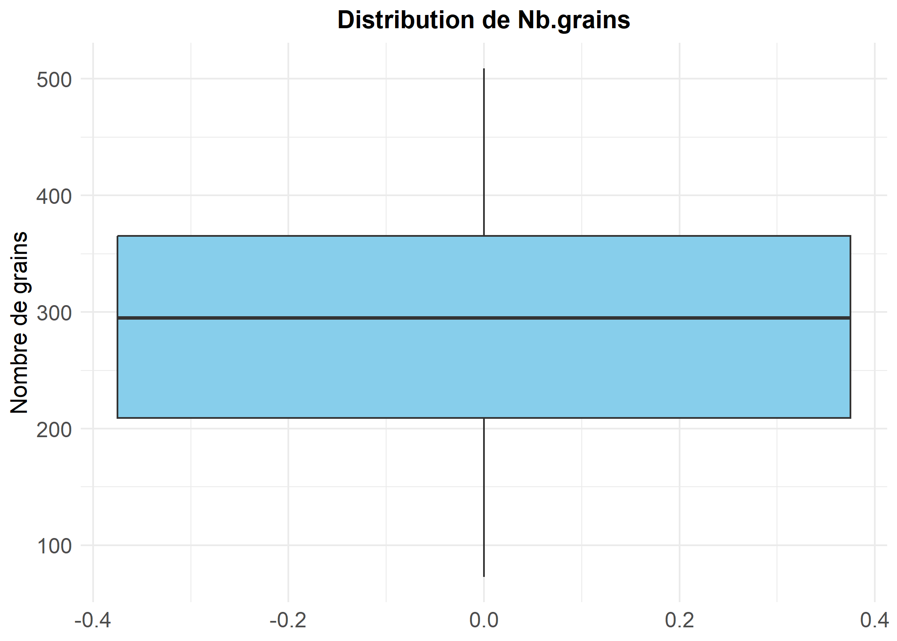
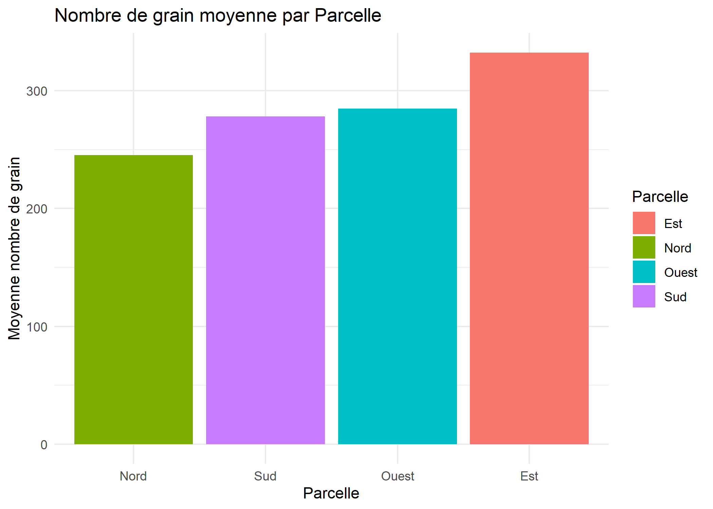
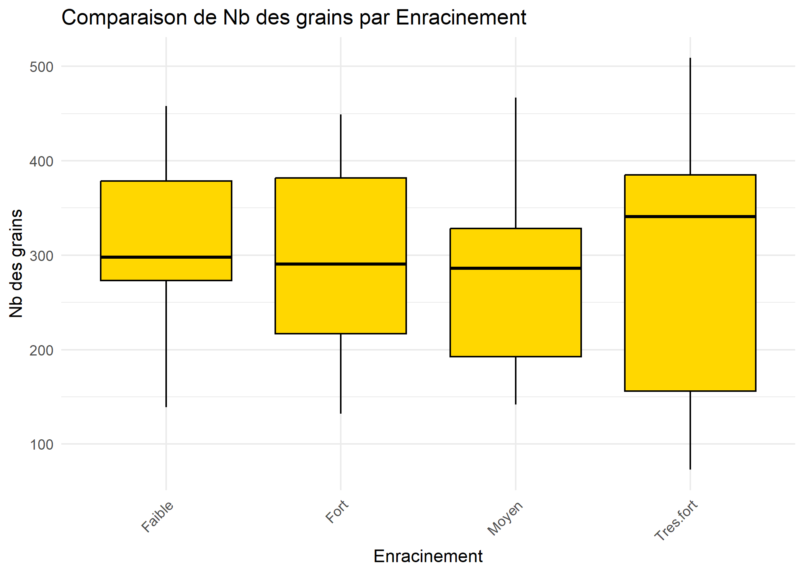
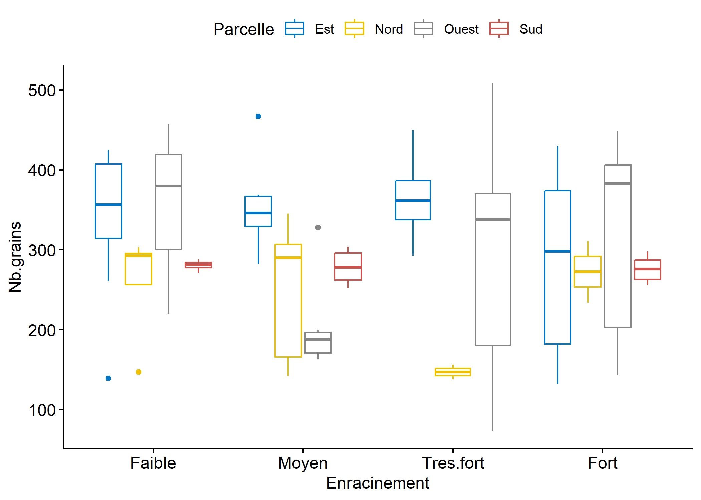

Analyse bivarie
Etude de la variable dépendante
ggplot(data, aes(y = Nb.grains)) +
geom_boxplot(outlier.color = "red", outlier.shape = 16, outlier.size = 3, fill = "skyblue") +
theme_minimal() +
labs(
title = "Distribution de Nb.grains",
y = "Nombre de grains"
) +
theme(
plot.title = element_text(hjust = 0.5, face = "bold", size = 14),
axis.text = element_text(size = 12),
axis.title = element_text(size = 13)
) Si on considère la variable dépandante nombre de grain isolément, l’analyse du boxplot montre qu’il n’y a pas de valeurs abérrantes.
Comparaison entre Parcelle et nombre de grain
ggplot(data_group) +
aes(x = reorder(Parcelle, mean), y = mean, fill = Parcelle) +
geom_col() +
scale_fill_hue(direction = 1) +
theme_minimal() +
labs(title = "Nombre de grain moyenne par Parcelle", x = "Parcelle", y = "Moyenne nombre de grain")
L’analyse du nombre moyens de grins suivant la parcelle montre que les plantes de mais situées dans la parcelle Est ont en moyenne un rendement plus élevé, suivies de celles situées dans la parcelle Ouest. Les plantes situées dans la parcelle ont le rendement le plus faible.
 Les boxplots de la variable dépendante suivant les parcelles montrent la présence de valeurs aberrantes pour la parcelle Est. Mais le test de la méthode de Turkey montre que ses valeurs ne sont pas extrêment atypes (is.extreme=FALSE)
Les boxplots de la variable dépendante suivant les parcelles montrent la présence de valeurs aberrantes pour la parcelle Est. Mais le test de la méthode de Turkey montre que ses valeurs ne sont pas extrêment atypes (is.extreme=FALSE)
Comparaison entre “Enracinement” et “Nb.grains”
ggplot(data_group) +
aes(x = reorder(Enracinement, mean), y = mean, fill = Enracinement) +
geom_col() +
scale_fill_hue(direction = 1) +
theme_minimal() +
labs(title = "Nombre de grain moyenne par niveau d'enracinement", x = "Enracinement", y = "Moyenne nombre de grain")
L’analyse du nombre moyens de grains suivant le niveau de l’enracinement montre que les plantes de faible niveau racinement ont en moyenne un rendement plus élevé, suivies de celles de niveau très fort. On note toutefois que les écarts entre les moyennes des différents groupes sont faibles.
 On note l’absence de valeurs aberrantes si on considère les boxplots suivant le niveua de l’enracinement
Croisement entre les deux facteurs
box-plot croisé
library("ggpubr")
bxp <- ggboxplot(
data,
x = "Enracinement", y = "Nb.grains",
color = "Parcelle", palette = "jco"
)
bxp
Test de valeur abhérantes
Nous avons deux valeurs extrêmement abérante,nous decidons de les suprimmer.
# Identifier les outliers
outliers <- data %>%
group_by(Parcelle, Enracinement) %>%
identify_outliers(Nb.grains)
data_clean <- data %>%
anti_join(outliers %>% filter(is.extreme), by = c("Parcelle", "Enracinement", "Nb.grains"))
cat("Nombre de lignes après suppression :", nrow(data_clean), "\n")Nombre de lignes après suppression : 97 write_delim(data_clean, "data/data_corrige.csv", delim = ";")
data <- data_clean
cat("Fichier sauvegardé avec succès.")Fichier sauvegardé avec succès.Apres suppressions nous obtenons de nouveau une valeur extreme , en la suprimmant nous n’obtenons plus de valeur extreme.